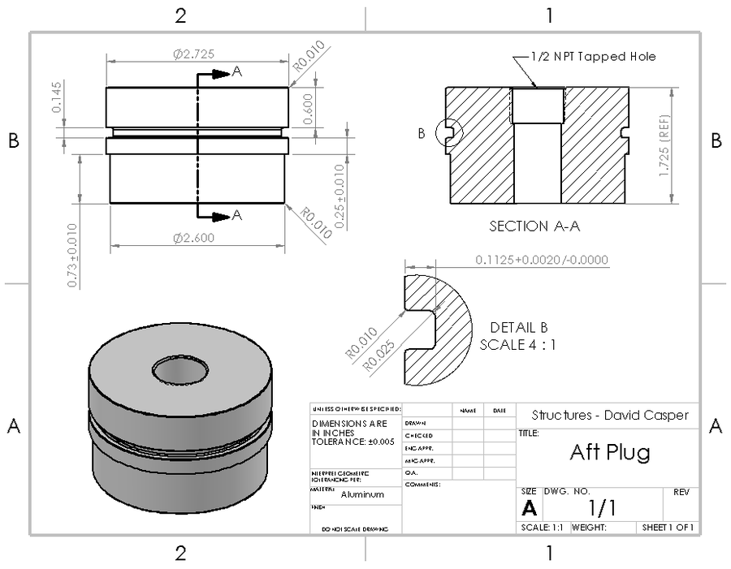
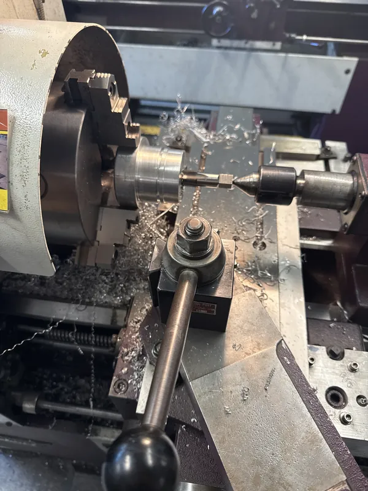
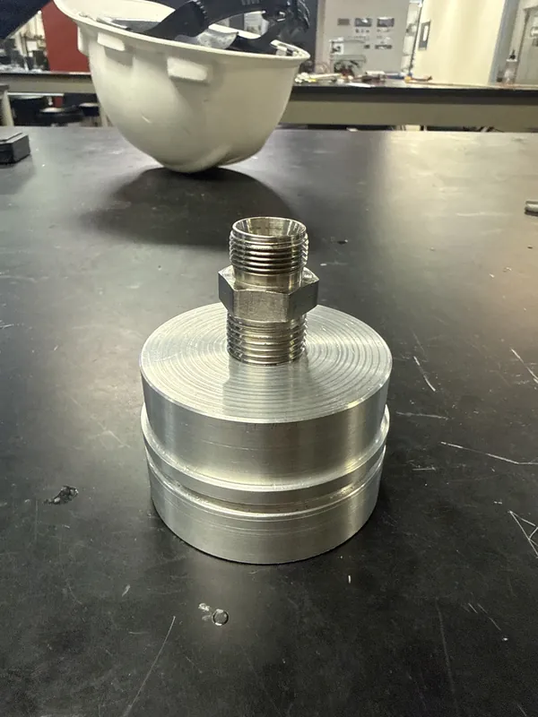
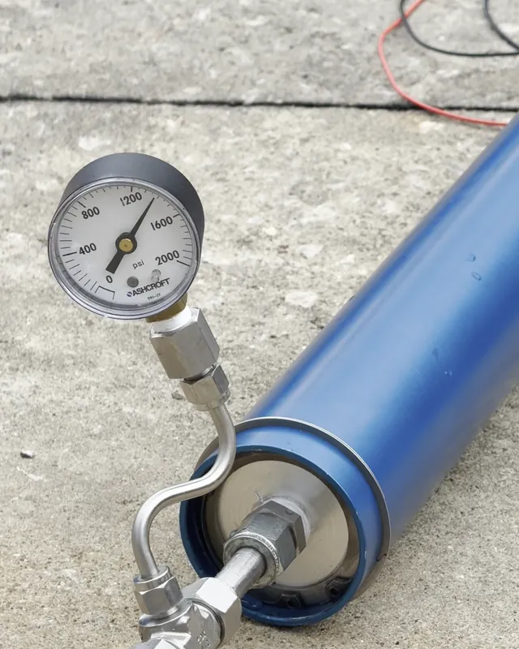

Why test with water
A hydrostatic test fills the motor case with water and raises the pressure above anything the motor will see when it fires. Water barely compresses, so it stores very little energy under pressure. If a seal lets go, the case leaks and the pressure falls away. The same failure with gas would release far more energy.
We added this test because the forward closure had been modified for head end ignition. Igniter wires now passed through it, sealed with epoxy.
Choosing the test pressure
We estimated peak chamber pressure from the motor’s published peak thrust of 407.5 lbf, its 0.625 in throat diameter, and a thrust coefficient of about 1.5.
A thrust coefficient between 1.4 and 1.6 moves that estimate between about 830 and 950 psi. We set the test at 1.5 times the estimate and rounded to a target of 1,300 psi.
The aft plug
To hold water the case has to be closed at both ends. The forward end was the closure under test. For the aft end I made a plug that copies the nozzle’s outside dimensions, so it sits in the case exactly as the nozzle does. It seals with the nozzle’s own O-ring and is held by the same Loki snap ring.
Copying the nozzle was deliberate. The test then loaded the same seal and the same retention hardware that the motor relies on when it fires. Where the nozzle has its throat, the plug has a 1/2 NPT tapped hole for the fill and gauge plumbing.
I measured the nozzle and its O-ring with calipers, drew the plug in SOLIDWORKS, and turned it on a manual lathe from a piece of scrap aluminum. The O-ring groove is the feature that decides whether it seals, so it carries the tightest tolerance on the drawing: a depth of 0.1125 in, +0.0020/−0.0000 in.









The tests
- 1,300psi
- Test pressure
- 1.5×
- Estimated peak chamber pressure
- 1min
- Hold time
- 0
- Leaks at either closure
On October 28, 2026 we filled the case, bled the trapped air through a valve, and brought it up to 1,300 psi on a 2,000 psi gauge. It held for one minute with no leaks at the forward closure or at the aft plug. When we took it apart, the igniter leads still had continuity.
We ran the test again on November 11, after the final epoxy pour on the closure, and it passed again. Three days later the motor fired on the test stand.